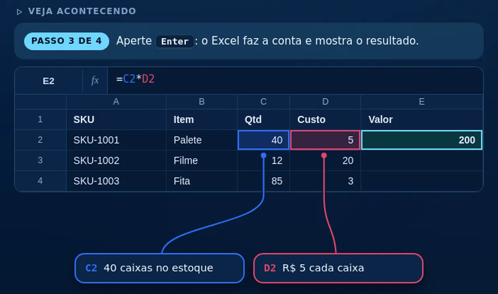
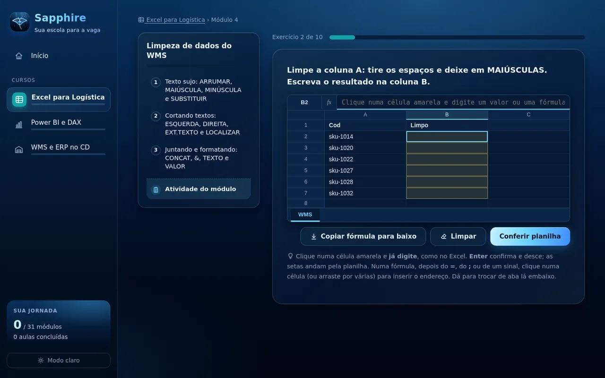

PROJECT GEMS by Ruan
PROJECT GEMS by RuanExcel
Do zero às fórmulas que as empresas pedem: PROCV, ÍNDICE+CORRESP, SOMASES, matrizes e cruzamento de planilhas sem erro.
12 módulos36 aulasUm aplicativo de ensino para áreas administrativas. Aulas curtas, do básico ao avançado, com exemplos do dia a dia do trabalho e exercícios num Excel de verdade, dentro do app.
Os cursos
Planilhas, indicadores e sistemas de gestão: o que se usa todo dia no escritório e no estoque, explicado com casos reais do trabalho.
Do zero às fórmulas que as empresas pedem: PROCV, ÍNDICE+CORRESP, SOMASES, matrizes e cruzamento de planilhas sem erro.
12 módulos36 aulasComo um painel é construído: tratar os dados no Power Query, montar o modelo estrela e escrever medidas em DAX.
10 módulos30 aulasComo os sistemas de gestão funcionam por dentro, o que cada um faz e como resolver os problemas do dia a dia de um centro de distribuição.
9 módulos27 aulas
Veja acontecendo
Nas aulas, uma planilha se preenche na sua frente: a fórmula é digitada, cada célula usada ganha uma cor e um balão explica o que ela guarda.

Pratique
No fim de cada módulo, você resolve os exercícios digitando as fórmulas numa planilha dentro do app, com barra de fórmulas, abas e copiar para baixo.
PC e celular
O Sapphire está sendo feito para Windows e para Android, com o mesmo visual e as mesmas aulas. No celular, o menu vira uma gaveta e as planilhas se ajustam à tela.
Como estudar
O caminho já vem montado: é só seguir.
O que vem nele
O Sapphire ainda está sendo preparado e não tem download por enquanto. Quando a primeira versão sair, ela aparece aqui e nas novidades da página inicial, grátis como todas as gemas.